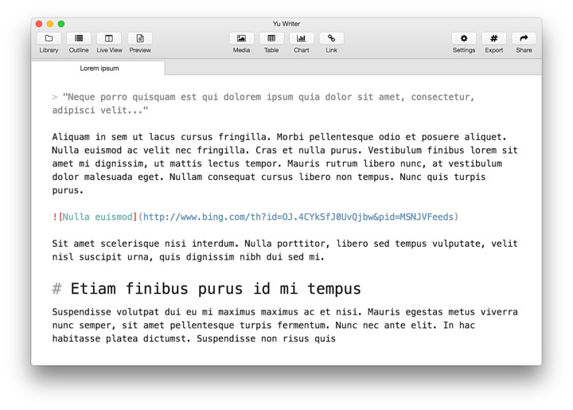
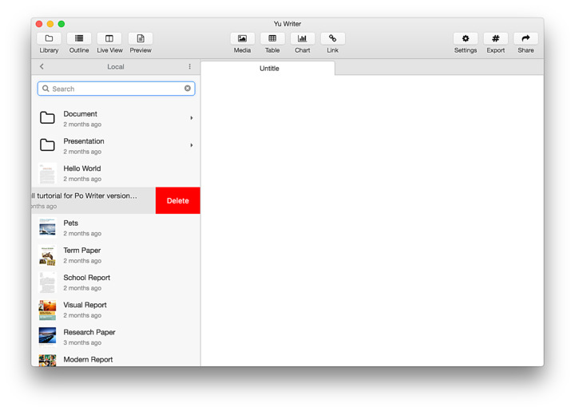
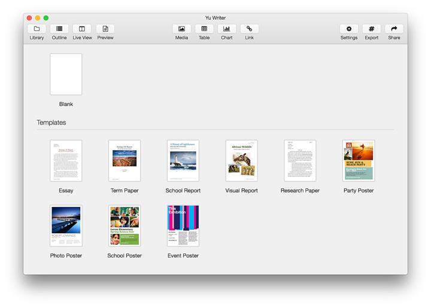
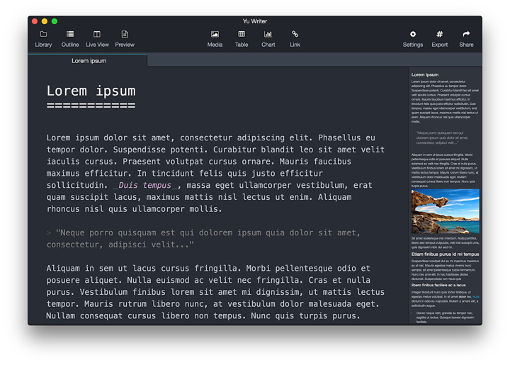

FEATURES
-

格式自动转换
从网页复制过来的内容将会自动转换为 Markdown 文本，无需手动修改， 方便资料采集和编写。 -

文档库
内置了功能完善的文档库，集中统一地管理文档。 文档库具有自动保存功能，你可以随时关闭、打开应用，随时继续编辑，每次修改都有历史记录。 -

照片管理
只需把照片拖入文档，应用就会自动把照片缩放到合适的大小并插入到文档， 同时还会自动生成一份适合 Retina（HiDPI）屏幕观看的版本。 -

文档模版
内置了包括技术文档、电子书、博客文章等几种不同样式的模版，可以生成专业、美观的 PDF 文档。 -

外观和录入模式
内置 4 种界面主题以及 5 种录入模式，从视觉和功能上提升写作体验。 -

实时预览
可以实时预览文档的格式和排版，可以调整预览区的宽度和缩放比率， 还可以拖拉浮块来快速定位文档位置。